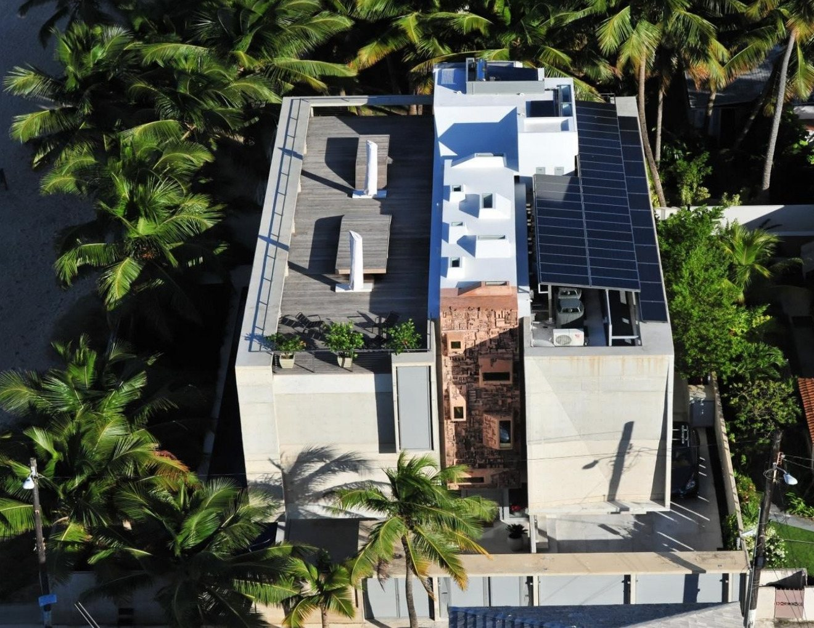
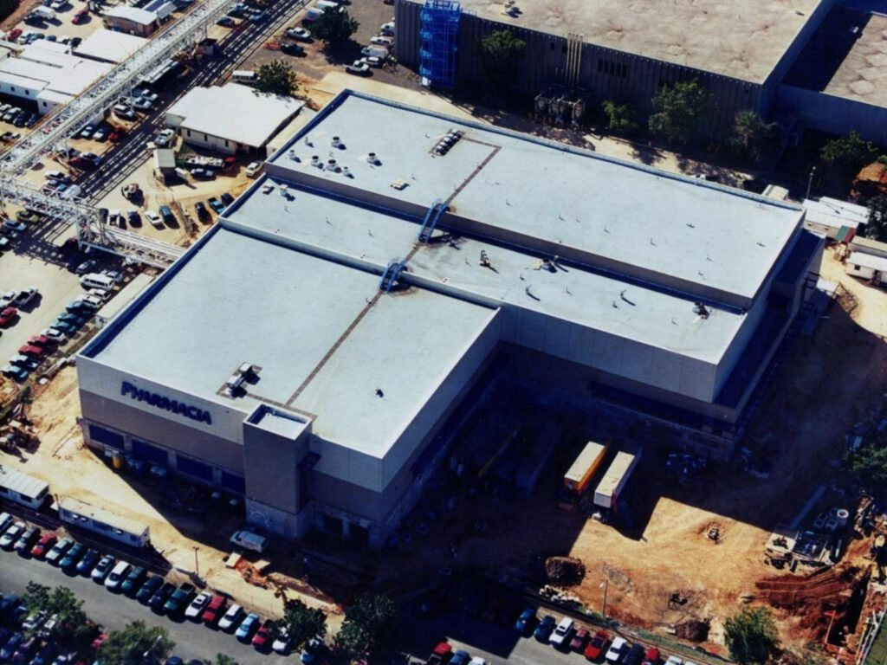
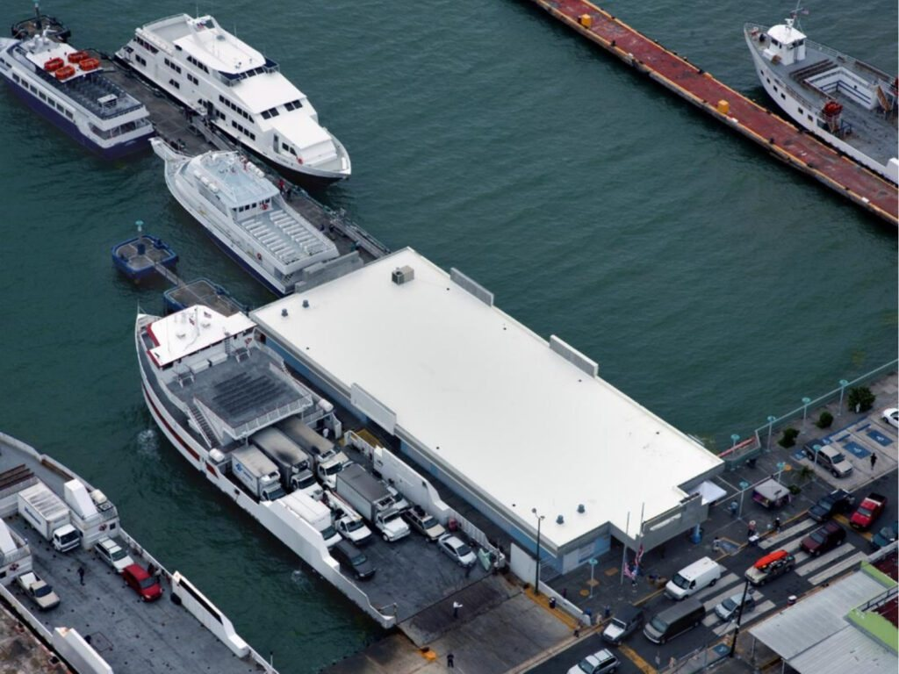

Río Piedras, San Juan
Detectamos filtraciones y reparamos techos en Río Piedras y San Juan. Sellado profesional, impermeabilización y mantenimiento para que tu techo aguante la lluvia fuerte.
Resultados reales
Trabajos de techo reales hechos por For Roofing. Desliza la cinta y toca cualquier foto para verla grande.



← desliza para ver los trabajos →
Lo que hacemos
Diagnóstico honesto primero: reparamos lo que hay que reparar y sellamos lo que hay que sellar.
Localizamos el punto exacto por donde entra el agua, aunque la mancha esté lejos de la grieta.
DiagnósticoReparamos grietas, juntas y puntos débiles antes de sellar, para que el trabajo dure.
ReparaciónSellado completo con materiales de calidad, aplicado sobre una superficie preparada y limpia.
SelladoCapa impermeable que protege la losa y las paredes del agua y la humedad.
ProtecciónInspección y retoques periódicos para que el sellado siga trabajando por años.
MantenimientoVisitamos tu propiedad en San Juan, evaluamos el estado del techo y te orientamos sin compromiso.
GratisAsí de fácil
Vamos a tu propiedad en San Juan, revisamos el techo completo y detectamos filtraciones.
Arreglamos grietas, juntas y puntos débiles antes de aplicar nada.
Aplicamos el sellado con preparación y materiales de calidad.
Te entregamos el trabajo con tu techo protegido contra la lluvia.
Quiénes somos
For Roofing Contractors Inc es una compañía de techos en Río Piedras, San Juan. Nos especializamos en lo que más duele cuando llueve: detectar filtraciones y reparar techos de verdad.
Primero diagnosticamos, luego reparamos, y después sellamos. Ese orden es lo que hace que el trabajo dure.
Preguntas frecuentes
Detección de filtraciones, reparación de techos, sellado de techos e impermeabilización en el área de San Juan.
En Río Piedras, San Juan, y servimos el área metropolitana y pueblos cercanos.
Manchas en el plafón, pintura que se ampolla, olor a humedad o goteras cuando llueve son señales claras. Venimos a evaluarlo.
Sí. Reparamos grietas y puntos débiles primero; sellar sobre un techo roto no sirve de nada.
Escríbenos por WhatsApp al 787-758-8709 o llámanos y coordinamos la visita.
Agenda tu evaluación
Llena esto y te abrimos WhatsApp con tu mensaje listo.
Estimados gratis: escríbenos por WhatsApp al 787-758-8709 con fotos de tu techo y te orientamos.
Esta página la creó ManuPro. Escríbenos hoy mismo y cotiza la website profesional de tu negocio.
Cotizar por WhatsApp